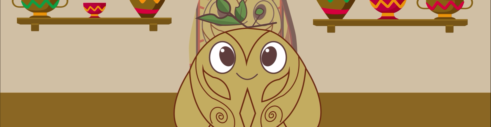

Para acercar esta tradición al público joven, hemos creado a Nari, un personaje inspirado en la técnica del Barniz. Nari guía a los usuarios a través de la historia y los procesos de creación, combinando un lenguaje cercano con un diseño atractivo que refleja los colores cálidos del Mopa-Mopa.
MopAR se presenta en formato de libro interactivo. Al escanear ciertas páginas con tu dispositivo móvil, accedes a animaciones, videos y tutoriales en realidad aumentada que muestran cada paso de la técnica del Barniz de Pasto. Es una manera lúdica y efectiva de aprender y valorar esta artesanía.